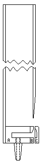
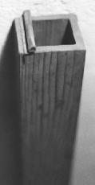
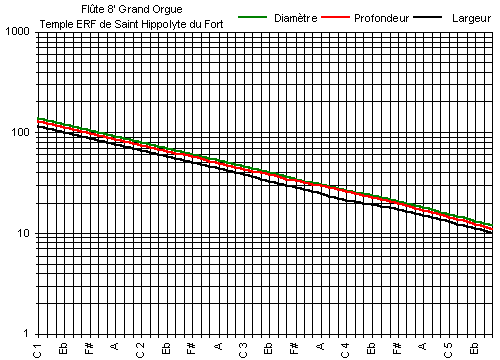
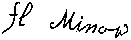

Grand Temple de l'Église Réformée
Clavier : |
Grand Orgue |
Jeu : |
Flûte 8' |
[ Tailles du jeu ]
|
 Crochet de fixation des tuyaux |
 Bouche type |
 Coupe |
 Rouleau d'accord type |

| Relevé d'écriture : |  |
|---|